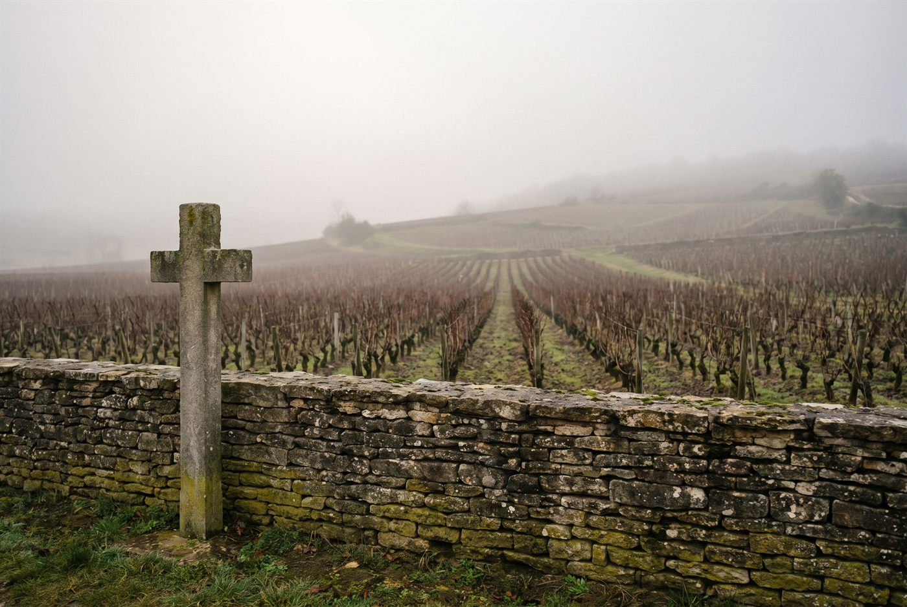

Les domaines · Côte de Nuits · Vosne-Romanée
09
Vosne-Romanée · Côte de Nuits
Domaine Edouard Confuron
Une jeune signature de Vosne-Romanée, entre vendange entière, infusion douce et fruit lumineux.

Ambiance de Vosne-Romanée
Fils de François Confuron-Gindre, Edouard Confuron a créé son propre domaine en 2021 tout en poursuivant le travail au domaine familial de Vosne-Romanée. Sur 1,5 hectare répartis entre Vosne-Romanée, Gevrey-Chambertin et Nuits-Saint-Georges, il vinifie en vendange entière et avec très peu de soufre, en privilégiant l'infusion plutôt que l'extraction. Le vignoble est conduit en agriculture biologique, sans certification à ce jour.
Blancs
- Cépage · Aligoté
Rouges
- Cépage · Pinot noirParcelle issue des terres familiales d'origine, qui donne un vin épicé, complexe et serré en finale.
- Cépage · Pinot noirCuvée en vendange entière au toucher velouté et à la longue persistance.
- Cépage · Pinot noirLieu-dit au sud de Gevrey-Chambertin, à la limite de Morey-Saint-Denis.
- Cépage · Pinot noirParcelle exploitée en fermage, du côté de Vosne-Romanée.
- Cépage · Pinot noirVinifié avec une part de vendange entière, vif et tendu.
- Cépage · Pinot noirCuvée d'entrée de gamme vinifiée presque entièrement en grappes entières.
Ces cuvées vous parlent ?
Demander les disponibilités